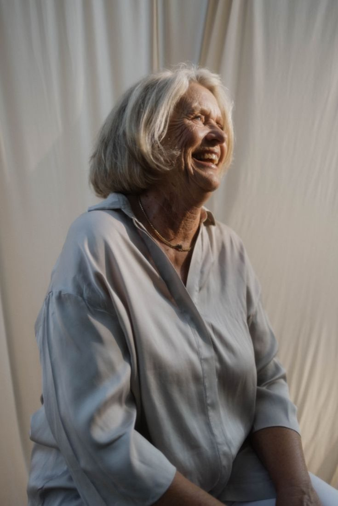
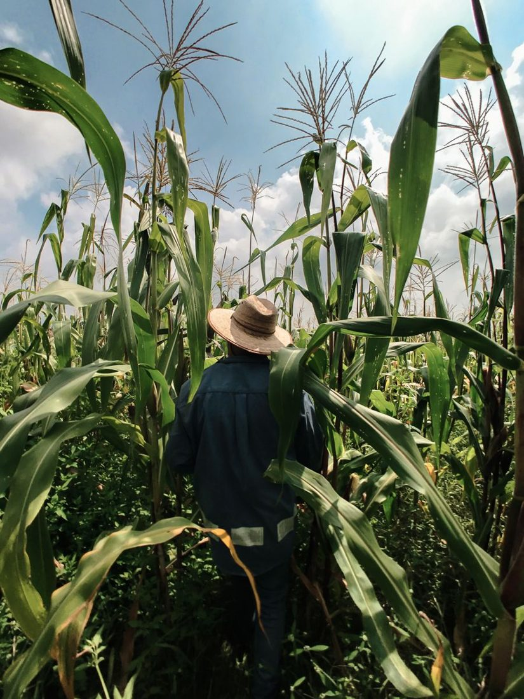
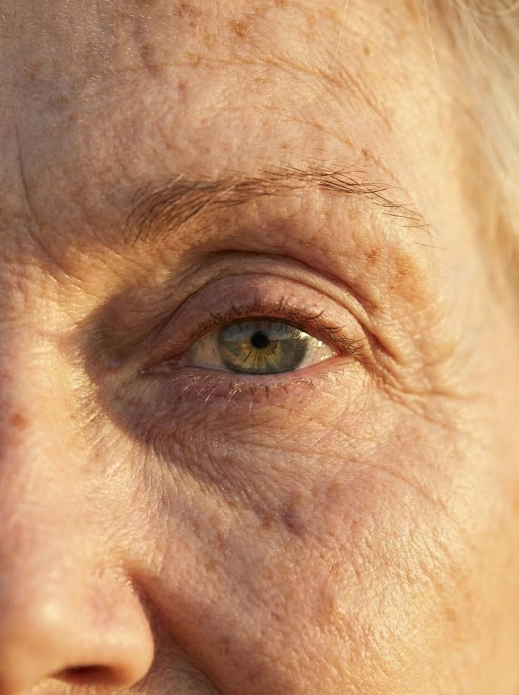
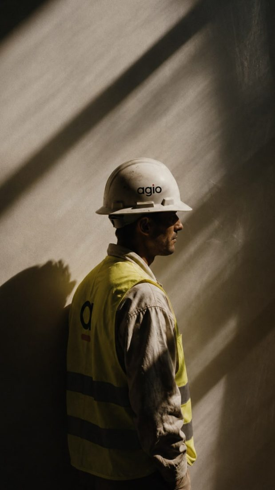
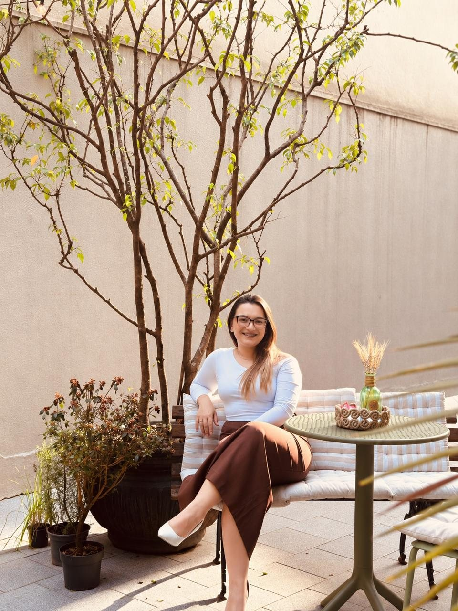

Advocacia Previdenciária e Trabalhista em Santo Antônio da Patrulha/RS
Seus direitos fazem parte da sua história.
Protegê-los faz parte do nosso trabalho.
Áreas de atuação
Como posso ajudar
Benefícios do INSS, direitos do trabalhador e questões do dia a dia. Se a sua situação não está na lista, pergunte.
Quero falar sobre o meu casoPrevidenciário (INSS)
- Salário-maternidade
- BPC/LOAS
- Auxílio-doença
- Auxílio-doença rural
- Aposentadoria por invalidez
- Auxílio-acidente
- Aposentadoria por idade
- Aposentadoria por tempo de contribuição
- Aposentadoria rural e híbrida
- Aposentadoria especial
- Aposentadoria da pessoa com deficiência
- Pensão por morte
- Auxílio-reclusão
- Revisão de benefícios
- Recurso de benefício negado
- Planejamento de aposentadoria
Role a lista · toque para conversar
Trabalhista
- Revisão de cálculos da rescisão
- Verbas rescisórias
- Horas extras
- Rescisão indireta
- FGTS não depositado
- Reversão de justa causa
- Insalubridade e periculosidade
- Adicional noturno
- Intervalo de almoço não concedido
- Trabalho sem carteira assinada
- Desvio e acúmulo de função
- Equiparação salarial
- Estabilidade da gestante
- Acidente e doença do trabalho
- Burnout e doenças ocupacionais
- Assédio moral
Role a lista · toque para conversar
Salário-maternidade
Grávida? Com uma única contribuição você pode ter direito ao salário-maternidade
O benefício é pago durante 4 meses. Para ter direito, basta que a contribuição ao INSS tenha sido feita de forma correta.
- Carteira assinada (CLT) ou empregada doméstica
- MEI, autônoma ou quem paga o INSS por conta própria
- Dona de casa que contribui como facultativa
- Trabalhadora rural, comprovando o trabalho no campo

BPC/LOAS
Receber um salário mínimo mesmo sem nunca ter contribuído?
Isso é possível com o BPC/LOAS, benefício pago pelo INSS a famílias de baixa renda.
Para idosos a partir de 65 anos e pessoas com deficiência de qualquer idade, inclusive crianças com autismo (TEA) e, em alguns casos, com TDAH.
Quero saber sobre o BPCRescisão
Saiu do emprego e está em dúvida se recebeu tudo o que deveria?
Você pode estar deixando dinheiro na mesa.
Com a análise do cálculo do termo de rescisão, você tem certeza dos valores que recebeu e de que está tudo correto.
Quero analisar minha rescisão
Aposentadoria rural
Trabalha na roça e quer saber quando pode se aposentar?
A aposentadoria rural tem regras próprias, diferentes das de quem trabalha na cidade.
Converse com uma advogada previdenciária e entenda o seu caso.
Quero saber da minha aposentadoriaRescisão indireta
A empresa não deposita o seu FGTS?
Você pode ter direito à rescisão indireta: se desligar da empresa com os mesmos direitos de quem é demitido sem justa causa.
Não basta pedir demissão: antes de tudo, é necessário buscar orientação.
Quero saber se é o meu casoBenefício negado
A negativa do INSS não é o fim
Se o seu benefício foi negado, ainda é possível buscar o seu direito. Com o auxílio de uma advogada previdenciária, pode ser feito recurso no próprio INSS ou ingressar com uma ação judicial contra o INSS.
Quero entender meu caso
Auxílio-doença
Está doente e não pode trabalhar? Você pode ter direito ao auxílio-doença
Uma advogada previdenciária pode encaminhar o seu pedido e acompanhar cada etapa.
Quero pedir meu afastamentoTrabalhador rural
Trabalha na roça e precisa se afastar? Você também pode ter direito ao auxílio-doença
Quem trabalha no campo pode receber o auxílio-doença mesmo sem pagar o INSS todo mês. O que conta é comprovar o trabalho rural.
Quero orientação sobre auxílio rural
Auxílio-acidente
Sofreu um acidente e ficou com sequela?
Se o acidente deixou uma limitação permanente e o trabalho ficou mais difícil, você pode ter direito ao auxílio-acidente.
É uma indenização mensal do INSS que pode ser recebida junto com o salário. Vale para acidentes de trabalho e também fora dele.
Quero saber sobre o auxílio-acidenteComo funciona
Do primeiro contato ao acompanhamento
Contato
Você manda uma mensagem pelo WhatsApp e conta, do seu jeito, o que está acontecendo.
Análise
Avalio a sua situação e os documentos que você tem. Se faltar algo, explico onde conseguir.
Orientação
Você recebe uma explicação clara: quais caminhos existem e o que cada um envolve.
Acompanhamento
Se decidir seguir, acompanho cada etapa e mantenho você informado(a).
Por que buscar orientação?
No meio de um momento difícil, ter ao lado alguém que realmente se importa com o seu caso faz toda a diferença.
Fazer certo da primeira vez poupa tempo e dinheiro: encaminhar um benefício sozinho pode fazer você perder meses. Com uma advogada ao lado, o pedido já sai do jeito certo.
Atendimento individualizado
Cada história é ouvida do começo. Sem resposta pronta.
Linguagem clara
Você entende cada passo, sem juridiquês.
Presencial e online
No escritório em Santo Antônio da Patrulha ou pelo WhatsApp, de onde você estiver.

Sobre
Olá, sou Diovana Carvalho
Sou advogada em Santo Antônio da Patrulha e atuo nas áreas previdenciária e trabalhista.
Escolhi trabalhar com pessoas que chegam em momentos delicados: uma gestação, uma demissão, uma doença, a perda de alguém. Por isso, meu atendimento começa pela escuta.
Explico cada etapa com clareza, para que você tome decisões com segurança, seja no escritório ou online.
Advogada · OAB/RS 119.055
Você se identifica?
Alguma dessas situações é a sua?
Toque na frase que mais se parece com o seu momento e fale com a Dra. Diovana pelo WhatsApp.
- Meu patrão me humilha ou me constrange no trabalho.Trabalhista
- Recebo pensão por morte e tenho dúvidas sobre meus direitos.Previdenciário
- Trabalho sem carteira assinada e quero regularizar minha situação.Trabalhista
- Meu nome não aparece corretamente no cadastro do INSS.Previdenciário
- Fui demitida durante a gravidez ou logo depois de voltar da licença.Trabalhista
- Tenho descontos na minha aposentadoria que não reconheço.Previdenciário
- Trabalho aos domingos e feriados e não sei se recebo corretamente.Trabalhista
- Preciso comprovar um período em que trabalhei, mas não tenho registro.Previdenciário
- Minha empresa não respeita meus horários de descanso.Trabalhista
- Quero saber se posso receber aposentadoria e pensão por morte ao mesmo tempo.Previdenciário


Seu direito
merece cuidado
Quanto antes você entende a sua situação, mais caminhos ficam abertos. Conte o seu caso para a Dra. Diovana.
Falar com a Dra. Diovana